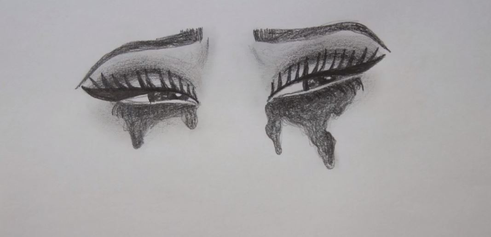

On a magical planet a sillly worm appears out of a green plants.
Women often feel the need to hide their feelings otherwise they will be labeled as being a “typical overly emotional woman.” This is especially true in the workplace and as a result women often try to completely hide their emotional responses to prevent being looked down upon for being weak and losing their credibility. However if women cover up their emotions too much they could be viewed as apathetic and uninterested. So women have to create a delicate balance, this balancing act can in itself be stressful. How can one show the appropriate amount of passion without seeming overly emotional?
Medusa possessed great beauty and many men lusted after her. However she longed to become a priestess in Athena’s temple so she preserved her virginity out of respect to Athena. However Athena soon grew jealous of Medusa. One day Poseidon noticed Medusa and made advances towards her; Medusa denied all of his advances out of loyalty to Athena. He then decided to take her by force. Medusa ran to Athena’s temple for help, however no help was given. After Poseidon had raped Medusa, Athena appeared infuriated and it was then that she cursed Medusa. Her beautiful hair that she once envied was turned into snakes and anybody that looked into her eyes would be turned to stone. Medusa is often viewed as a monster but she actually had good intentions and was punished for something out of her control.
In my interpretation I have Medusa glitched because I am demonstrating the disruption that occurs in the psychological mind of the victim when a rape has taken place. Medusa is often known as just being the monster that she became and what is often overlooked are the disastrous events that took place beforehand. Much like rape victims are often victim blamed or even shamed.